1. مقدمة: ماذا يحتوي الملف
أثر قالب موقع وكالة تصميم وتسويق بتصميم واحد متكامل، مكتوب بـ HTML و CSS و JavaScript خالصة بدون أي مكتبات أو إطارات عمل. كل صفحة لها نسخة عربية من اليمين لليسار ونسخة إنجليزية، ويعمل القالب مباشرة من المتصفح أو من أي استضافة.
العرض المباشر: https://ahmedhossamelhamamy.github.io/nawafeth-landing-demo/athar/
فيديو جولة في القالب (دقيقة واحدة): https://ahmedhossamelhamamy.github.io/nawafeth-landing-demo/athar/video.mp4
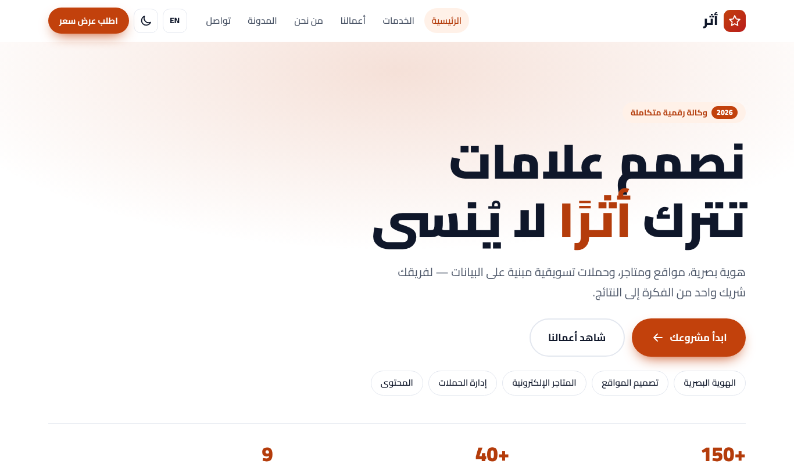
الصفحات (13 صفحة بكل لغة)
| الصفحة | الملف العربي | الملف الإنجليزي |
|---|---|---|
| الرئيسية | index.html | index-en.html |
| الخدمات والباقات | services.html | services-en.html |
| معرض الأعمال بالفلترة | work.html | work-en.html |
| دراسة حالة | project.html | project-en.html |
| من نحن | about.html | about-en.html |
| الوظائف | careers.html | careers-en.html |
| المدونة بفلترة التصنيفات | blog.html | blog-en.html |
| صفحة المقال | blog-post.html | blog-post-en.html |
| التواصل والخريطة | contact.html | contact-en.html |
| سياسة الخصوصية | privacy.html | privacy-en.html |
| الشروط والأحكام | terms.html | terms-en.html |
| صفحة الخطأ 404 | 404.html | 404-en.html |
| صفحة الشكر | thank-you.html | thank-you-en.html |
هيكل الملفات
athar-agency-template/
├── index.html, index-en.html ... (كل الصفحات)
├── assets/
│ ├── css/theme.css ← الألوان والخط والزوايا (هنا تغيّر هويتك)
│ ├── css/style.css ← مكونات القالب
│ ├── css/pages.css ← تنسيقات الصفحات الداخلية
│ ├── js/main.js ← الوضع الليلي، القائمة، العدادات، النماذج
│ ├── js/pages.js ← الفلترة وإظهار كلمة المرور
│ ├── fonts/ ← خط Cairo محلي (SIL OFL 1.1)
│ └── img/ ← favicon.svg و og-image.png
├── docs/ ← هذا الدليل وصوره
├── دليل-الاستخدام.pdf ← نسخة PDF من هذا الدليل
├── sitemap.xml, robots.txt
└── README.md, LICENSE.txt, CHANGELOG.md2. التشغيل على جهازك
لا يحتاج القالب أي تثبيت أو أوامر. هناك طريقتان:
الطريقة 1: فتح الملف مباشرة
- فك ضغط الملف المضغوط في أي مجلد على جهازك.
- افتح مجلد
athar-agency-template. - انقر نقرتين على
index.htmlفيفتح في المتصفح. - تنقّل بين الصفحات من القائمة العلوية، وجرّب زر EN وزر الوضع الليلي.
الطريقة 2: محرر VS Code مع Live Server (مفضلة أثناء التعديل)
- ثبّت برنامج VS Code المجاني من code.visualstudio.com.
- من قائمة Extensions ابحث عن Live Server وثبّته.
- من File ثم Open Folder اختر مجلد
athar-agency-template. - انقر بالزر الأيمن على index.html واختر Open with Live Server، فتتحدث الصفحة تلقائياً مع كل حفظ.
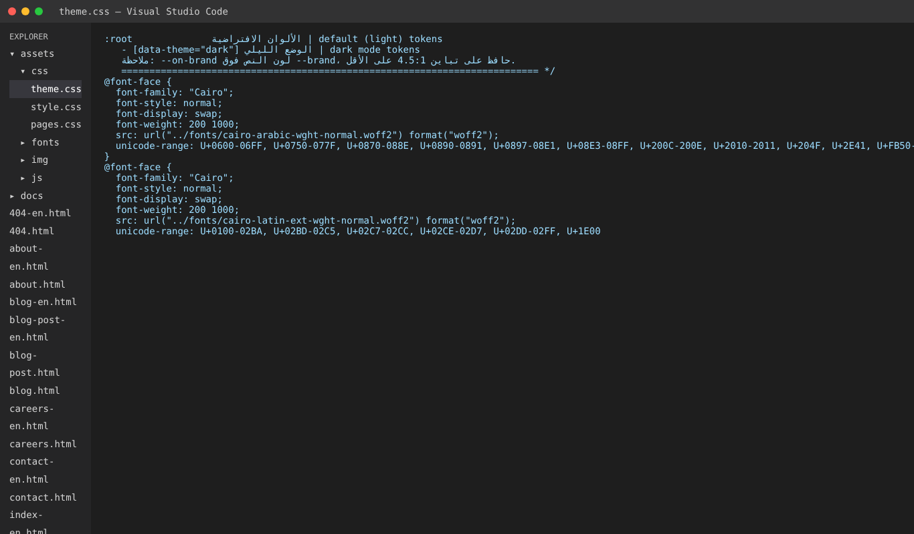
3. الرفع على الاستضافة
القالب موقع ثابت، فيعمل على أي استضافة. ارفع محتوى مجلد athar-agency-template وليس المجلد نفسه، بحيث يكون index.html في جذر الموقع.
استضافة cPanel (الاستضافات المشتركة)
- ادخل لوحة cPanel ثم File Manager.
- افتح مجلد
public_html(أو مجلد النطاق الفرعي). - اضغط Upload وارفع الملف المضغوط للقالب.
- انقر بالزر الأيمن على الملف واختر Extract، ثم انقل محتوى المجلد إلى public_html.
- افتح نطاقك في المتصفح للتأكد.
Netlify (مجاني وبدون أي إعداد)
- ادخل app.netlify.com/drop.
- اسحب مجلد
athar-agency-templateوأفلته في الصفحة. - خلال ثوان يعطيك Netlify رابطاً مباشراً، ويمكنك ربط نطاقك من Domain settings.
GitHub Pages (مجاني)
- أنشئ مستودعاً جديداً على GitHub وارفع محتوى المجلد.
- من Settings ثم Pages اختر الفرع main والمجلد root واحفظ.
- سيظهر رابط موقعك بعد دقيقة تقريباً. هكذا رُفع العرض المباشر لهذا القالب.
https://example.com إلى نطاقك في وسوم canonical و hreflang و og:image وفي ملفي sitemap.xml و robots.txt. استخدم البحث والاستبدال في VS Code (Ctrl+Shift+H) لتغييرها في كل الملفات مرة واحدة.4. أجزاء الصفحة وأين تعدّلها
كل الصفحات تتشارك نفس الترويسة والتذييل، والمحتوى بينهما مقسّم إلى أقسام <section> مستقلة يمكنك حذفها أو تكرارها أو تغيير ترتيبها.
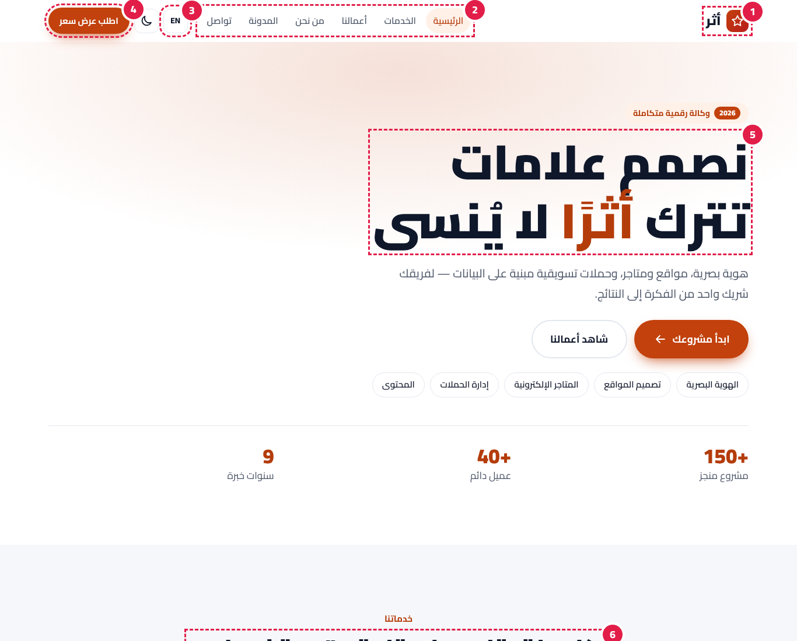
| # | الجزء | ابحث في الكود عن |
|---|---|---|
| 1 | الشعار واسم الموقع | class="logo" |
| 2 | روابط القائمة | class="main-nav" |
| 3 | زر اللغة وزر الوضع الليلي | data-lang-switch / data-theme-toggle |
| 4 | زر الدعوة في الترويسة | class="btn btn-primary btn-sm header-cta" |
| 5 | القسم الرئيسي (البطل) | class="hero أو class="page-hero" |
| 6 | أي قسم محتوى | <section class="section" |
5. تعديل النصوص والروابط
افتح ملف الصفحة وعدّل النص بين الوسوم مباشرة. مثال لعنوان القسم الرئيسي:
<h1>نصمم علامات تترك <mark>أثرًا</mark> لا يُنسى</h1>الكلمات داخل <mark> تظهر بلون العلامة. ولتعديل رابط زر غيّر قيمة href:
<a class="btn btn-primary" href="contact.html">تواصل معنا</a>-en، مثل about.html و about-en.html.6. تغيير الألوان والخط
كل الألوان معرّفة كمتغيرات في ملف واحد هو assets/css/theme.css. غيّر القيمة فيتغير اللون في كل الصفحات.
:root {
--brand: #c2410c; /* اللون الأساسي للأزرار والروابط */
--brand-strong: #9a3412; /* عند المرور بالمؤشر */
--brand-soft: #fff1e8; /* خلفيات فاتحة */
--accent: #1e293b; /* لون ثانوي */
--gradient: linear-gradient(135deg, ...); /* شريط الدعوة وشارة الشعار */
--radius: 10px; /* استدارة الزوايا */
}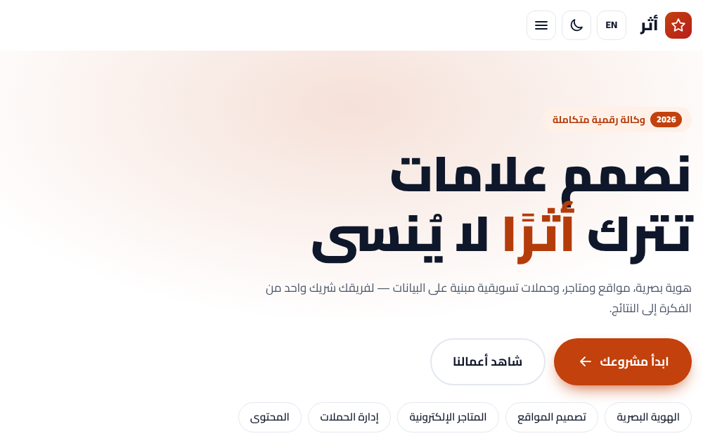
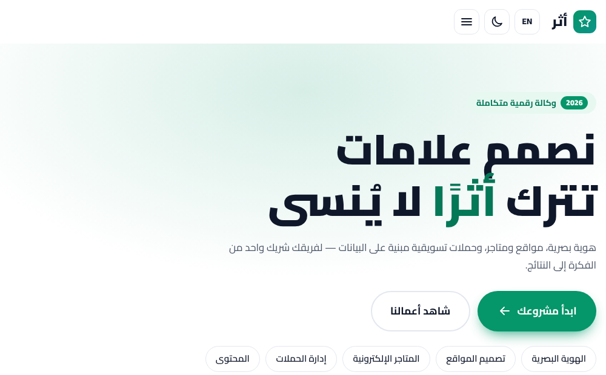
ألوان الوضع الليلي
عدّلها داخل [data-theme="dark"] في نفس الملف.
تغيير الخط
- ضع ملفات الخط الجديد (woff2) في
assets/fonts. - غيّر مسار
srcفي قواعد@font-faceأعلى theme.css. - غيّر اسم الخط في المتغير
--font.
7. الشعار والأيقونة والصور
الشعار
الشعار في الترويسة والتذييل عبارة عن أيقونة SVG واسم نصي. لاستخدام صورة شعارك استبدل محتوى الرابط بصورة:
<a class="logo" href="index.html"><img src="assets/img/logo.svg" alt="أثر" height="38"></a>أيقونة المتصفح وصورة المشاركة
استبدل assets/img/favicon.svg بأيقونتك، وassets/img/og-image.png بصورة 1200×630 تظهر عند مشاركة الرابط.
الصور التوضيحية
الرسومات داخل البطاقات رسومات SVG خفيفة للعرض. استبدل أي <svg> داخل class="thumb" بصورة:
<div class="thumb"><img src="assets/img/project-1.jpg" alt="اسم المشروع" width="800" height="600" loading="lazy" style="width:100%;height:100%;object-fit:cover"></div>8. القائمة وإضافة صفحة جديدة
- انسخ صفحة قريبة من المطلوب، مثل about.html، وسمّها باسم جديد مثل team.html.
- غيّر
<title>وdescriptionورابط canonical داخل<head>. - احذف الأقسام غير المطلوبة وأضف المحتوى.
- أضف رابطاً في القائمة داخل
class="main-nav"وفي التذييل في كل الصفحات. - كرر الخطوات للنسخة الإنجليزية team-en.html، وأضف الصفحتين إلى sitemap.xml.
<li><a href="team.html">الفريق</a></li>لتمييز الصفحة الحالية في القائمة أضف class="is-active" aria-current="page" للرابط.
9. النماذج والرسائل وواتساب
كل النماذج تتحقق من الحقول قبل الإرسال (الاسم، البريد، رقم الجوال، الموافقة) وتعرض رسالة الخطأ تحت الحقل.
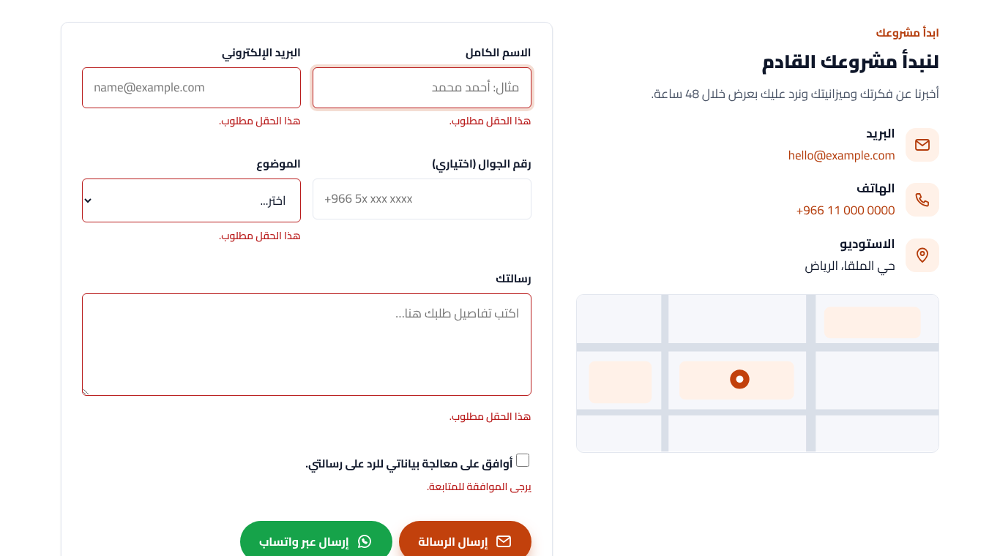
استقبال الرسائل على بريدك عبر Formspree (مجاني)
- أنشئ حساباً على formspree.io واضغط New Form.
- انسخ رابط النموذج الذي يشبه https://formspree.io/f/abcdwxyz.
- أضف الخاصية data-endpoint إلى وسم النموذج في contact.html و contact-en.html:
<form class="card reveal" data-validate data-endpoint="https://formspree.io/f/abcdwxyz" data-redirect="thank-you.html" novalidate>بعد الإرسال الناجح ينتقل الزائر إلى صفحة الشكر thank-you.html.
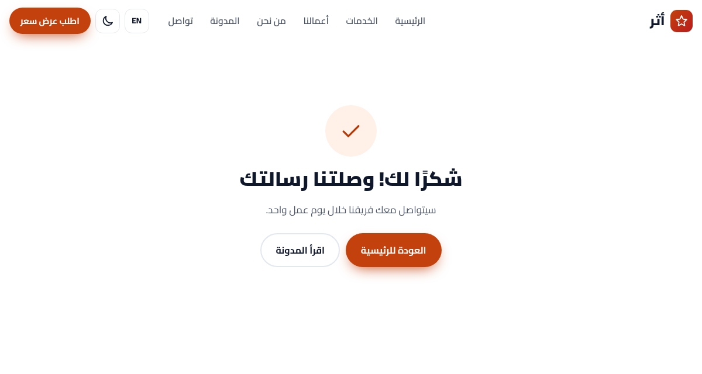
زر واتساب
يفتح محادثة واتساب بنص الرسالة. ضع رقمك بالصيغة الدولية بدون + أو أصفار:
<button class="btn btn-wa" type="button" data-whatsapp="9665XXXXXXXX">إرسال عبر واتساب</button>10. الوضع الليلي واللغة
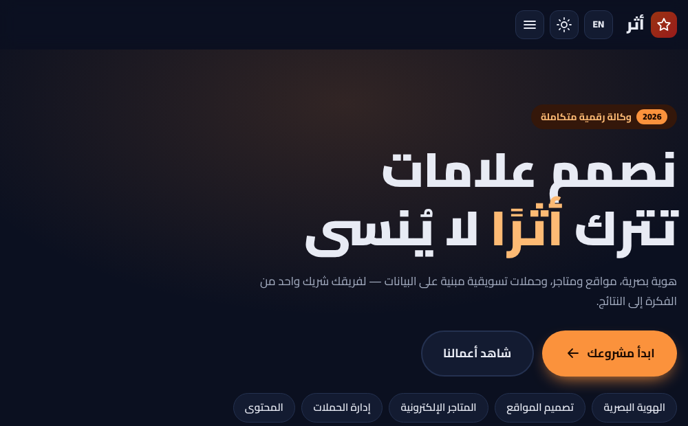
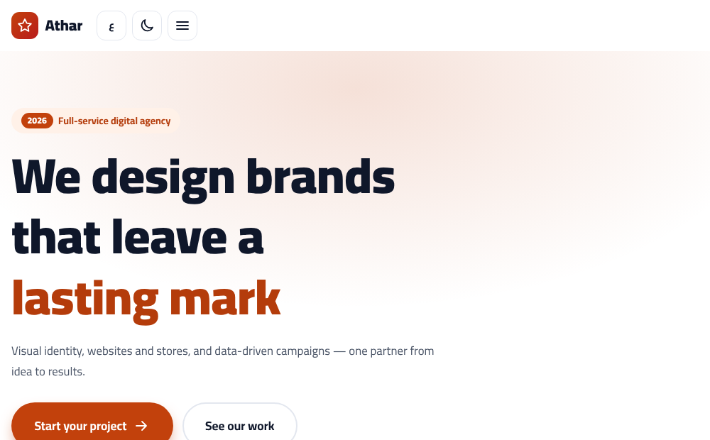
زر EN / ع يربط كل صفحة بنظيرتها. الرابط في data-lang-switch يتغير تلقائياً لكل صفحة، فلو أضفت صفحة جديدة ضع رابط نسختها الأخرى فيه.
لإلغاء الوضع الليلي احذف زر data-theme-toggle من الترويسة.
11. معرض الأعمال والفلترة ودراسة الحالة
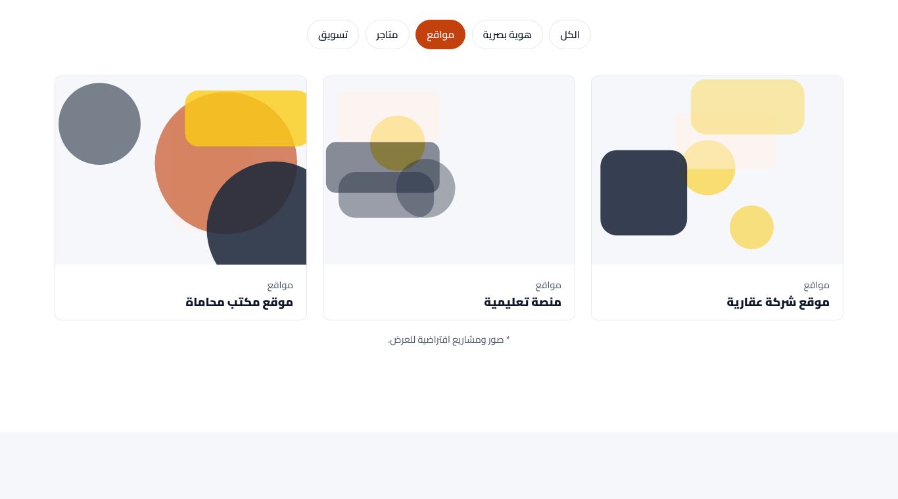
كل بطاقة مشروع لها تصنيف في data-cat، وكل زر فلترة يحمل نفس الاسم في data-filter:
<button type="button" class="chip" data-filter="مواقع">مواقع</button>
...
<article class="work reveal" data-cat="مواقع"> ... </article>لإضافة تصنيف جديد أضف زراً جديداً واكتب نفس الاسم في بطاقات المشاريع. صفحة project.html قالب لدراسة الحالة: انسخها لكل مشروع وغيّر التحدي والحل والأرقام والصور.
12. محركات البحث والأداء
- عدّل
<title>وmeta descriptionلكل صفحة بكلمات نشاطك. - غيّر نطاق example.com كما في قسم الرفع، وارفع sitemap.xml إلى Google Search Console.
- بيانات JSON-LD في رأس كل صفحة تعرّف اسم الموقع لمحركات البحث.
- القالب سريع لأنه بدون مكتبات، والخط محلي مع font-display: swap، والرسومات SVG.
- يعمل على آخر إصدارين من Chrome و Edge و Firefox و Safari، ومتجاوب من 320px.
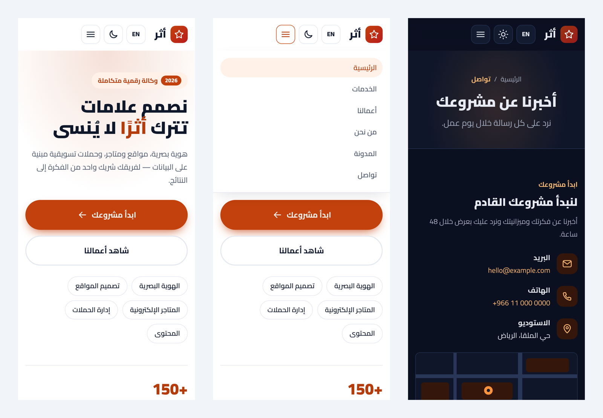
13. أسئلة شائعة وحل المشكلات
- الخط لا يظهر عربياً بشكل صحيح
- تأكد أن مجلد assets/fonts مرفوع كاملاً وأن المسارات لم تتغير.
- النموذج لا يرسل رسائل
- بدون data-endpoint يعرض النموذج رسالة نجاح فقط للتجربة. أضف رابط Formspree كما في قسم النماذج.
- غيّرت اللون ولم يتغير
- امسح ذاكرة المتصفح (Ctrl+F5)، وتأكد أنك عدّلت theme.css وليس style.css.
- أريد حذف النسخة الإنجليزية
- احذف ملفات *-en.html وزر data-lang-switch ووسوم hreflang.
- هل يعمل مع ووردبريس؟
- القالب HTML ثابت. يمكن تحويله لقالب ووردبريس لكن ذلك خارج محتوى المنتج.
14. الترخيص والمصادر والدعم
- الترخيص الشخصي: موقع واحد لك أو لمنشأتك. الترخيص التجاري: عدد غير محدود من المواقع بما فيها مواقع عملائك. يمنع إعادة بيع القالب نفسه.
- الخط: Cairo برخصة SIL Open Font License 1.1 (assets/fonts/OFL.txt).
- الأيقونات والرسومات: SVG مرسومة خصيصاً للقالب، بدون أي عنصر من مصدر خارجي.
- كل الأسماء والأرقام والآراء محتوى تجريبي للعرض، استبدلها بمحتواك.
- الدعم: عبر رسائل منصة بيكاليكا.